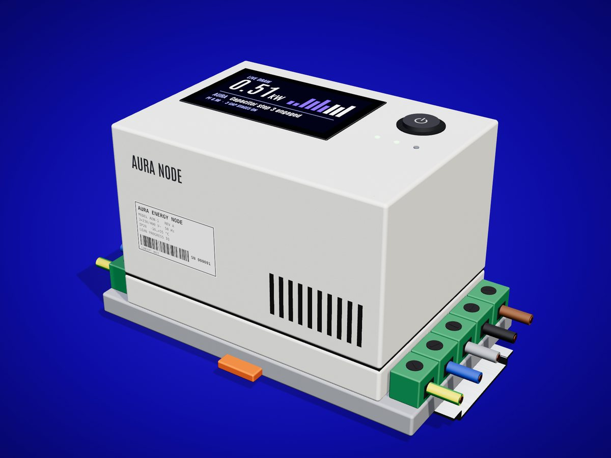
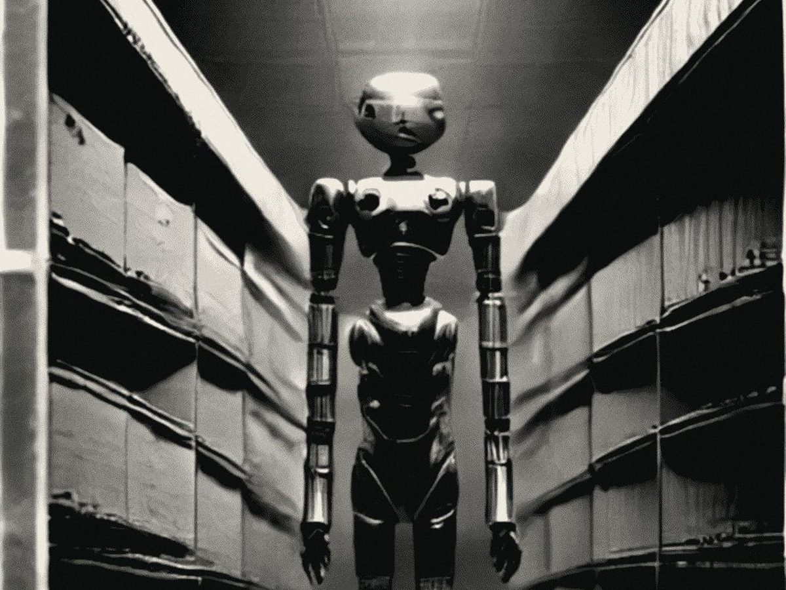

Also from Lean Progress IQ

Concept · Rev AThe agent leaves the terminal. A small box in the distribution board that measures every watt, runs Aura on LFM3-1.7B locally, and switches waste off itself. Open it up, layer by layer, in 3D.
Explore the 3D model
leanroboiq.onlineRobot data that speaks the languages your robots meet. We localize the instruction and annotation layer of robot-learning datasets, with the method and its limits stated plainly.
Visit Lean Robotics IQ